Творческая мастерская
Хуторок.
Место, где руки заняты,
а голова отдыхает.
Моя мастерская объединяет графический дизайн, работу с материалами и создание предметов: свечей, декора, картин и подарочных наборов.
Мастерская в VK ↗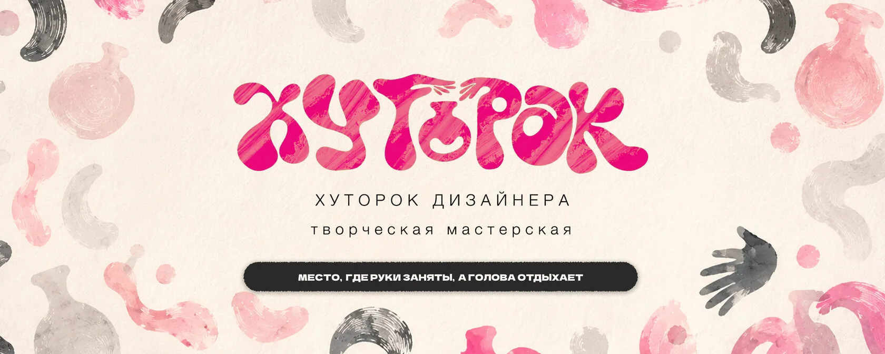
Визуальный образ
{kind=link}
{kind=link}
{kind=link}
{kind=link}
{kind=link}
{kind=link}
Работа с материалами
Форма и фактура.
Свечи, декор и роспись
{kind=link}
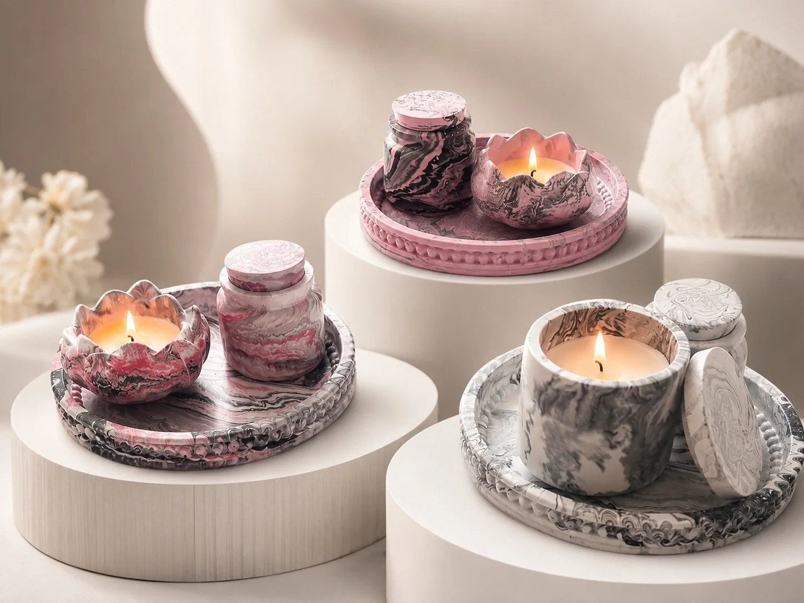
{kind=link}
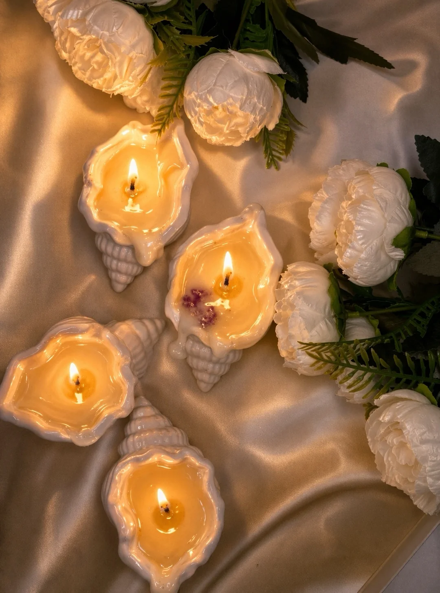
{kind=link}
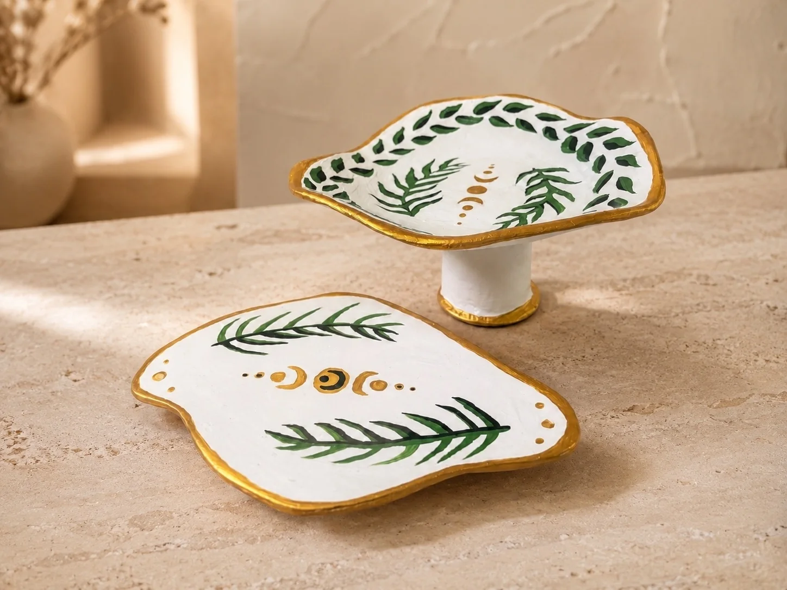
{kind=link}
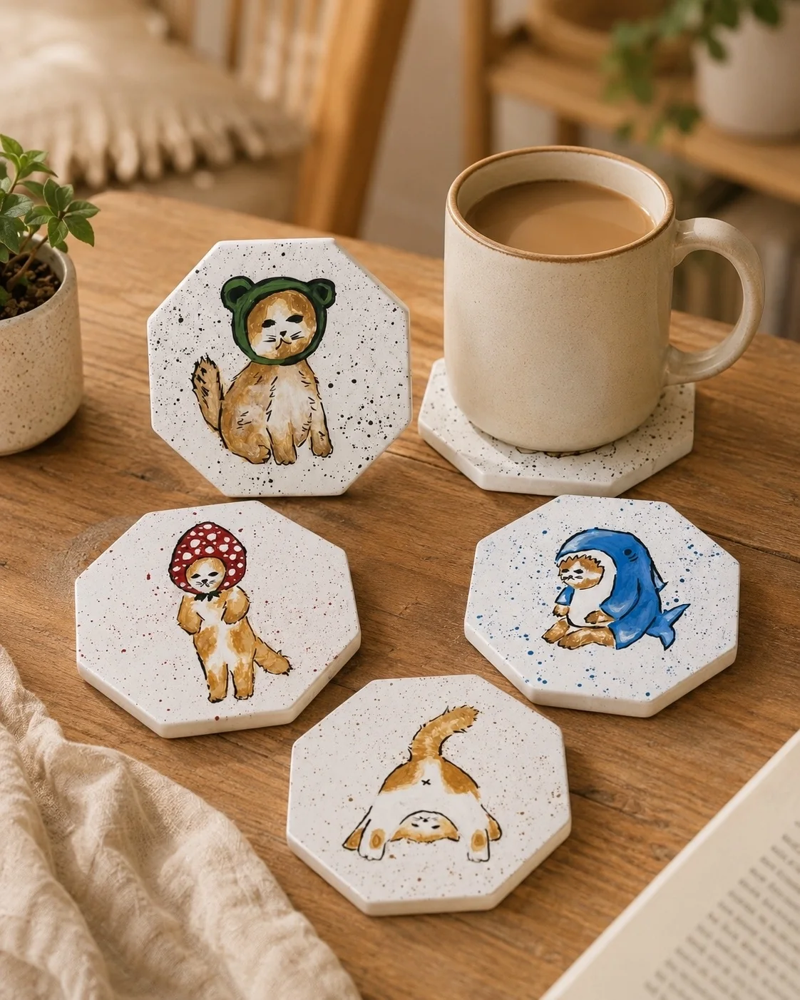
{kind=link}
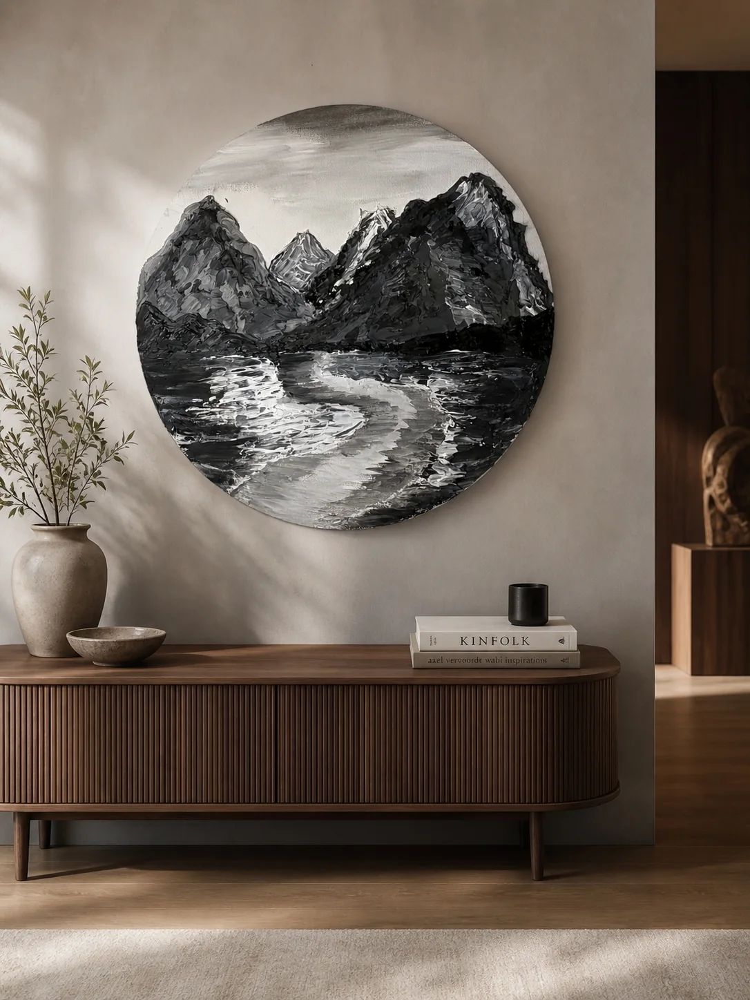
{kind=link}
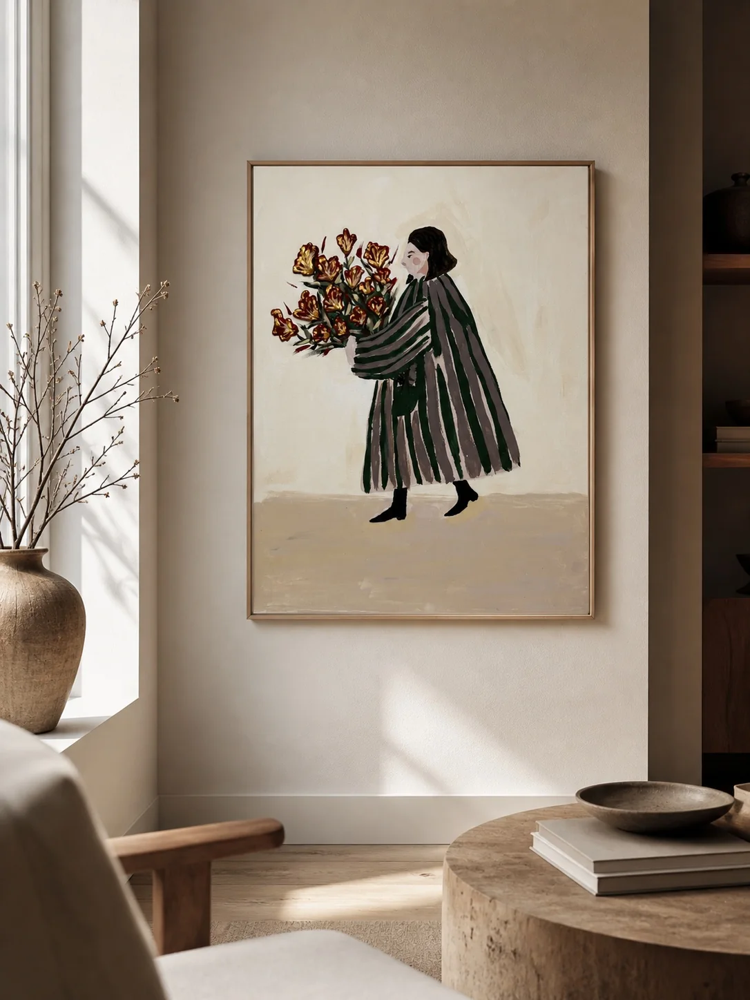
{kind=link}
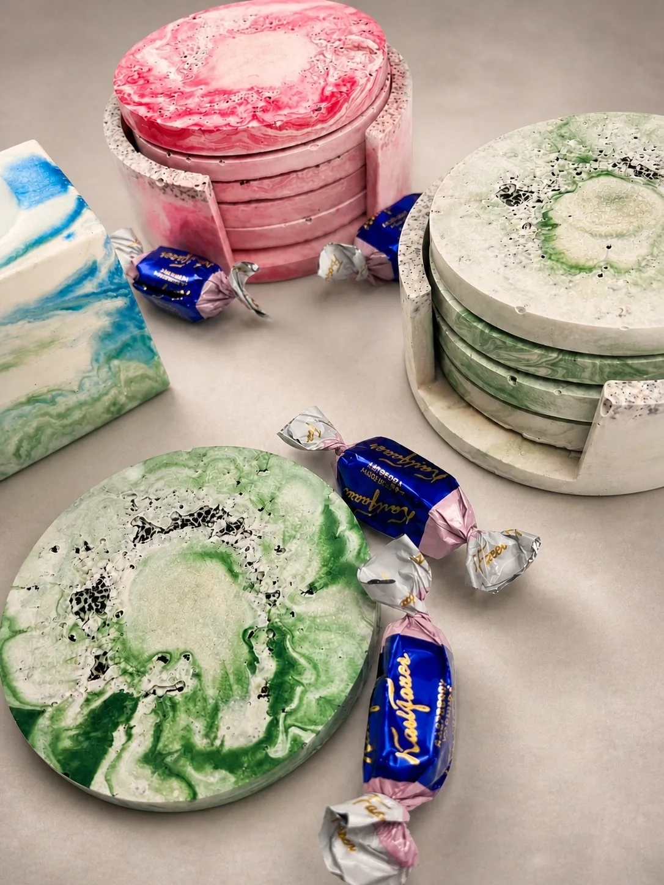
{kind=link}
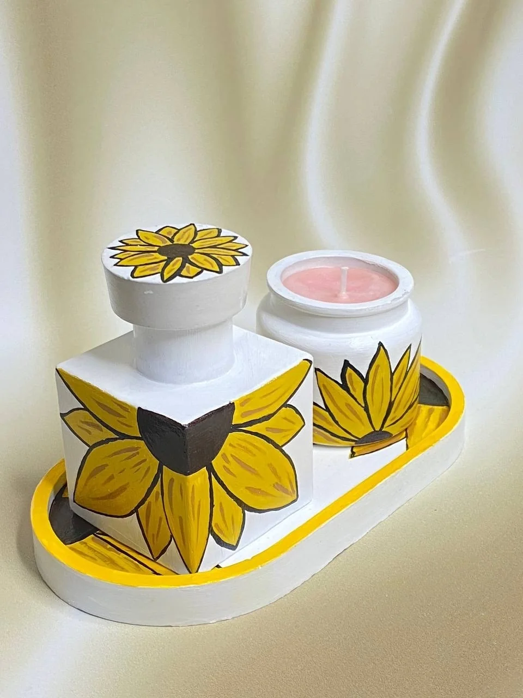
{kind=link}
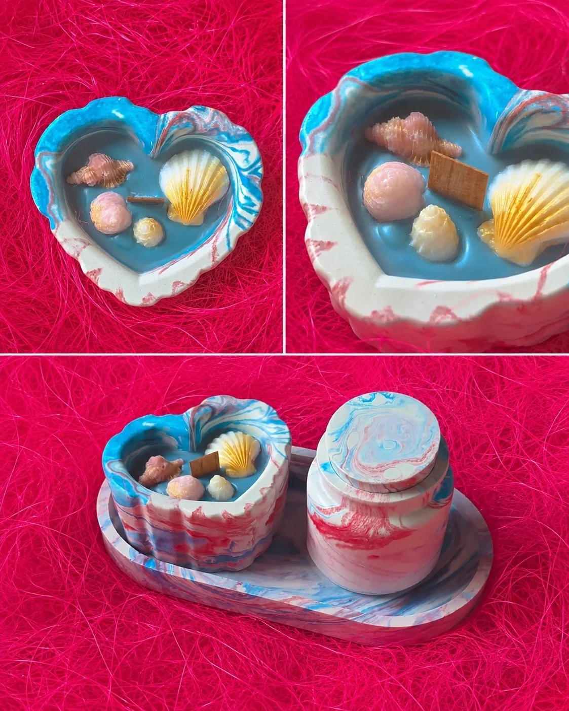
{kind=link}
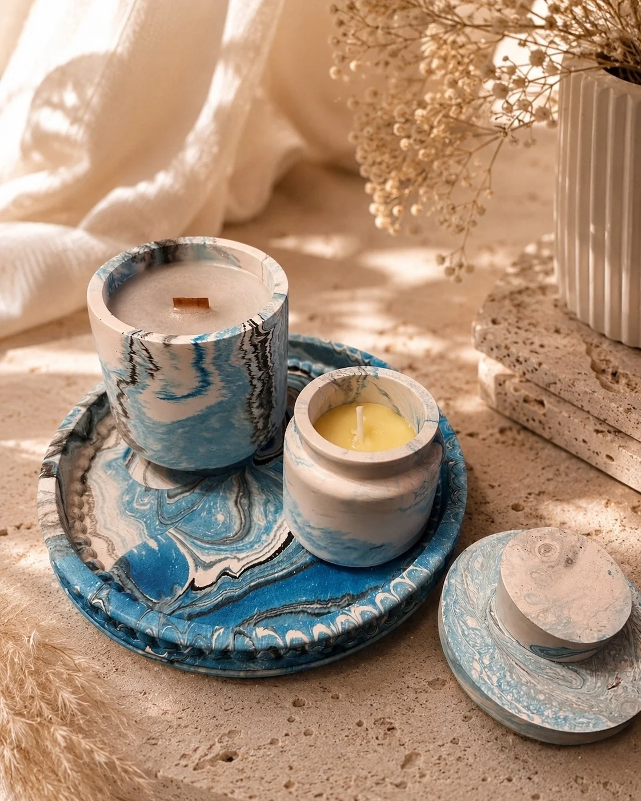
{kind=link}
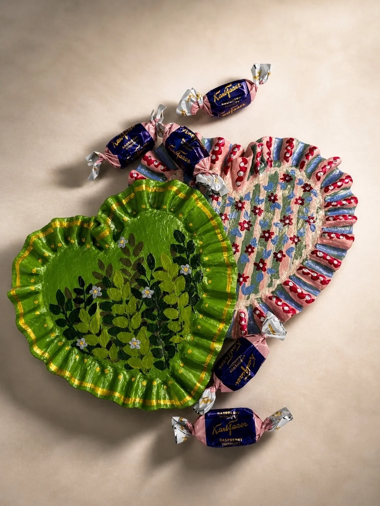
В мастерской
Изделия и индивидуальные заказы
Свечи, подносы, подставки, интерьерные картины и подарочные наборы. Цвет, оформление и состав набора можно обсудить под конкретный интерьер или повод.
Доступность готовых изделий, стоимость и сроки — в сообщениях мастерской.
Мастер-классы
Свечи, декоративные предметы и текстурные картины. Можно прийти без опыта: материалы предоставляются, а этапы работы разбираются вместе.
Узнать о занятиях ↗Подход к работе
Ручной труд, внимание к материалу и возможность пробовать новое. Небольшие различия в фактуре и росписи сохраняют характер каждой вещи.
3D-печать
От модели
к предмету.
Декор, прототипы и детали
Форму, размеры и материал подбираем под задачу. Ниже — примеры предметов; возможность изготовления обсуждается индивидуально.
{kind=link}
{kind=link}
{kind=link}
Задачи и материалы
Органайзеры, подставки, кашпо, сувениры, корпуса, крепления и прототипы. При выборе материала учитываются форма, нагрузка и условия использования предмета.
В мастерской используются Bambu Lab A1 и QIDI Q2. Технологию и параметры печати выбираем после обсуждения модели.
Как проходит заказ
- Пришлите описание, эскиз, размеры или пример предмета.
- Обсудим форму и условия использования.
- Подберём или подготовим модель и материал.
- Согласуем стоимость и сроки.
- Изготовим и проверим предмет.
Хуторок дизайнера
Приходите
творить вместе.
Занятия, готовые изделия и индивидуальные заказы.
Написать в мастерскую ↗Вернуться к портфолио